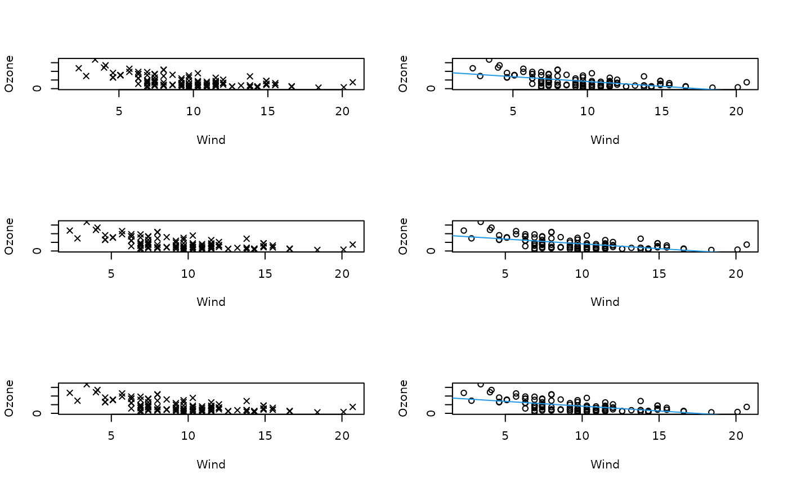

Create a standard scatter plot with a few extra elements added to the output object
ScatterPlot.RdThis function is a wrapper to the standard plott() function in the graphics package. It is tailored to generating a scatter plot, and adds detail to the stored object so that a better text description can be formulated using the VI() method in the BrailleR package. The function will become redundant once all other BrailleR functionality is working well with ggplot style graphics.
Usage
ScatterPlot(.data, x, y, base=FALSE, ...)
FittedLinePlot(.data, x, y, line.col=2, base=FALSE, ...)Arguments
- .data
the data.frame from which variables are drawn. Ignored if using base graphics.
- x,y
numeric variables. N.B. you must explicitly specify them by naming the arguments.
- base
Use base style graphics. Default is to use ggplot2 instead.
- line.col
colour to be used for the fitted line; col is used to modify the colour of the points.
- ...
additional arguments passed on to the plotting function.
Details
These wrapper functions will draw the graphics plots for a set of points. The only difference is that the fitted line is added for the FittedLinePlot()
The original style used base graphics. Given the improved interaction of ggplot graphics for BrailleR users, the preferred style from v0.33.0 onwards was the ggplot style.
Value
Either:
1. An object of class scatterplot of fittedlineplot, with the addition of any calls to the main title or axis labels being explicitly stored even if a zero length character string, or
2. a ggplot object.
References
Godfrey, A.J.R. (2013) ‘Statistical Software from a Blind Person's Perspective: R is the Best, but we can make it better’, The R Journal 5(1), pp73-79.
Examples
attach(airquality)
op = par(mfcol=c(3,2))
plot(x=Wind, y=Ozone, pch=4)
test1 = ScatterPlot(x=Wind, y=Ozone, pch=4, base=TRUE)
#> Warning: "base" is not a graphical parameter
#> Warning: "base" is not a graphical parameter
#> Warning: "base" is not a graphical parameter
#> Warning: "base" is not a graphical parameter
#> Warning: "base" is not a graphical parameter
#> Warning: "base" is not a graphical parameter
test1 #does the plot method work?
plot(x=Wind,y= Ozone)
abline(coef(lm(Ozone~Wind)), col=4)
test2 = FittedLinePlot(x=Wind, y=Ozone, line.col=4, base=TRUE)
#> Warning: "base" is not a graphical parameter
#> Warning: "base" is not a graphical parameter
#> Warning: "base" is not a graphical parameter
#> Warning: "base" is not a graphical parameter
#> Warning: "base" is not a graphical parameter
#> Warning: "base" is not a graphical parameter
test2 #does the plot method work?

par(op)
detach(airquality)